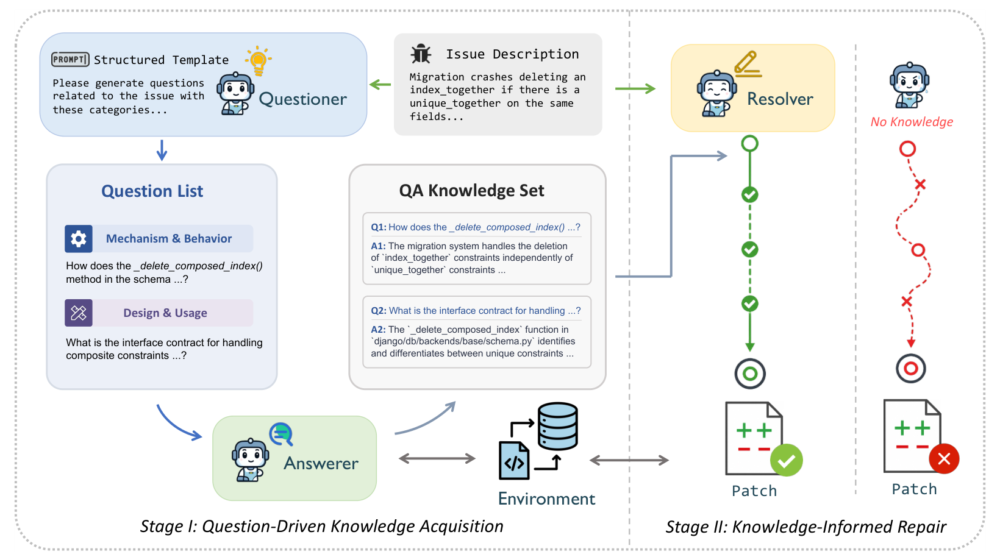
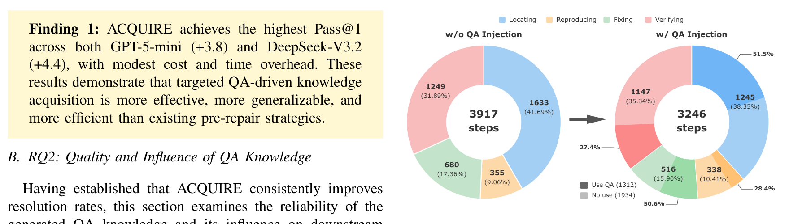
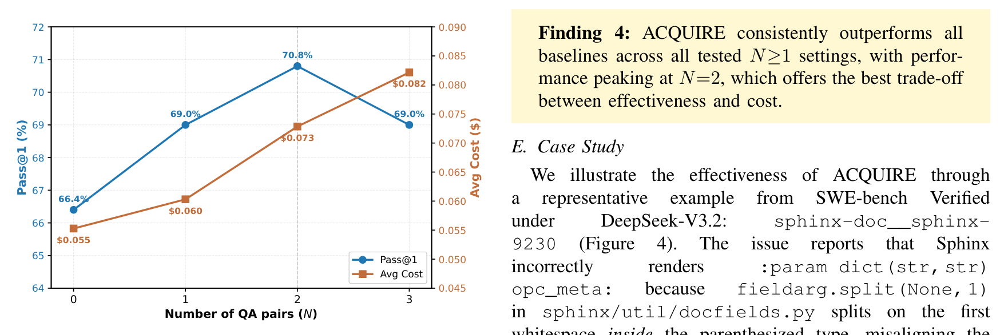

「上下文的纪律」系列 · 第 4 篇
先看懂再动手，修bug的成功率能涨多少？
▍改得很流畅，就是没修对
编码智能体修bug的失败里，有一类形态很固定：产出的分析写得头头是道，改动本身也不报错，但测试一跑，问题原样还在——它改了A处，症结在B模块的一个隐式约定里。这类失败和模型的推理能力关系不大，缺的是仓库内部的知识：跨模块依赖、接口的隐式契约、数据流的来龙去脉。这些知识写在代码里，不写在issue描述里，对着issue文本反复琢磨是补不上的。
有经验的工程师面对不熟悉的bug，通常不急着动手：先问几个问题——这个组件正常情况下怎么工作？这个接口对调用方有什么约定？相关代码在哪个模块？问完建立理解，再决定改哪里。上海交通大学团队今年发表的这篇论文，把"先问后修"做成了自动流程，并且先用一个实验量出了这套做法的价值上限。
【人工补充位 · 建议2–4句】写一段你的经历：你见过智能体哪次"改得流畅但没修对"；它缺的那条仓库知识是什么类型（隐式约定/跨模块依赖/外部库行为）；你或你的团队在动手前有没有"先理解"的固定步骤。
本期论文
Know Before Fix: QA-Driven Repository Knowledge Acquisition for Software Issue Resolution
修bug之前先弄懂：问答驱动的仓库知识获取
Haotian Lin et al.（上海交通大学、匹兹堡大学、广东以色列理工学院），2026-07（arXiv:2607.11111）
简要结论：动手修复之前，先让智能体把issue拆成几个具体问题、逐题探索作答，再把问答注入修复流程——SWE-bench Verified上Pass@1提升3.8–4.4个百分点；开天眼实验显示22.4%的既有失败本可救回；换成"直接写一段修复分析"反而比什么都不注入更差。
名词速查
▸ pre-repair（修复前探索）：在生成补丁之前先在仓库里收集信息的一类方法，常见做法是给出可疑文件位置或结构摘要。
▸ SWE-bench Verified：从真实GitHub issue构建的修复任务基准的精校子集，500个实例，用开发者编写的测试判定补丁是否真正解决问题。
▸ Pass@1：单次尝试生成补丁并通过测试的比例。
▸ oracle实验（开天眼实验）：把现实中拿不到的信息（标准答案补丁、标准文件集）交给实验流程，用来测一个方法的价值上限。
▸ Mini-SWE-Agent：一个最小化的shell交互式修复智能体，本文用作对照的基础底座。
论文的动机建立在一组实证观察上：多项研究把"仓库知识不足"列为修复智能体失败的主因之一，表现形态包括关键词式的浅层定位、跨模块追踪断链、违反隐式接口约定、不了解外部协议的行为。这些失败有一个共同点：推理过程本身没有毛病，错在输入端缺事实。
要验证"补知识就能救"，论文先做了一个开天眼实验。让基础修复智能体（Mini-SWE-Agent配DeepSeek-V3.2）先跑一遍SWE-bench Lite，收下116个失败实例；然后构造一对开了挂的问答——出题者能看到标准答案补丁，据此提出一个最关键的问题；作答者只能读标准答案涉及的文件，据此作答。把这一问一答注入原流程重跑：116个失败里有26个直接修好，恢复率22.4%。
这个数字的含义要读准：设定是受限的——只问一个问题、作答只允许读标准文件——所以22.4%是这套思路的下界，不是上限。它证明的是方向：对相当一部分失败案例，缺的就是仓库知识，补上就能活。
"…they first ask diagnostic questions about the code, such as how a component behaves, what contracts an API enforces, or where relevant modules reside, building the necessary understanding before committing to any repair strategy."
── 中译：他们先就代码提出诊断性问题——某个组件如何运作、某个接口强制什么约定、相关模块位于何处——在投入任何修复策略之前，先建立必要的理解。（原论文§II，描述有经验的工程师）
开天眼实验用的标准答案补丁现实中拿不到，ACQUIRE做的事就是把这套流程向自动化方向搬。整体分两段：第一段获取知识，一个出题者提出N个问题，N个作答者并行探索仓库、给出带证据的回答；第二段修复，修复者带着这组问答工作。
出题环节的关键设计是四类问题模板。五名研究生分析了116个开天眼问题，归纳出四类反复出现的知识维度，作为出题者的结构化模板：
| 类别 | 问什么 | 示例 | 占开天眼问题比例 |
|---|---|---|---|
| 机制与行为 | 逻辑流、状态管理、数据处理如何运作 | 认证系统如何校验用户凭据？ | 70.7% |
| 设计与用法 | API定义、类层级、错误规约、设计惯例 | 数据库连接类的接口契约是什么？ | 18.1% |
| 定位与结构 | 代码布局、模块组织、依赖关系 | 登录功能实现在哪里？ | 7.8% |
| 生态与标准 | 外部库行为、协议约束、语言语义 | HTTP/1.1对分块传输编码有什么要求？ | 3.4% |
表 1｜四类问题模板（原论文§III-B1，作者整理）。模板是引导不是配额：出题者按问题自由选类，不搞轮转
作答者与修复智能体共用同一套shell环境，但运行在只读模式，行为要求三条：答案必须引用具体的文件路径、函数名或代码行为；证据够了就提交；找不到证据就明确说存在缺口，不许编。N个作答实例彼此隔离、并行执行，互相看不到对方的探索轨迹——既防止交叉污染，也让耗时等于最慢的一个，而不是全部相加。
修复阶段，N组问答序列化成一个文本块，一次性注入修复者的上下文，放在修复指令之前。论文解释了不用"边修边动态注入"的理由：保持两阶段的模块化，并保证修复者的第一步决策就有完整知识可用。

图 1｜ACQUIRE流程：出题者提出N个问题，N个并行的只读作答实例各自探索仓库，问答结果一次性注入修复者（原论文Figure 1）
主结果见下表。两个底座模型上Pass@1分别提升3.8和4.4个百分点，成本增幅温和：GPT-5-mini单实例成本从0.024美元到0.054美元，DeepSeek-V3.2从0.055到0.073美元。
| 方法 | GPT-5-mini Pass@1 |
DeepSeek-V3.2 Pass@1 |
成本与时间 |
|---|---|---|---|
| 基础智能体（无预取） | 58.4 | 66.4 | 最便宜最快 |
| LocAgent（可疑位置） | 57.8（降） | 68.8 | 小模型上不升反降 |
| CoSIL（结构摘要） | 55.2（降） | 68.7 | 小模型上降3.2 |
| LingmaAgent（摘要+规划） | 60.0 | 67.4 | 成本高一个量级 |
| SWE-Debate（多智能体辩论） | 59.8 | 68.2 | GPT-5-mini成本0.738美元 |
| ACQUIRE（出题-作答） | 62.2 | 70.8 | 对辩论法成本约1/5 |
表 2｜主结果（原论文Table I，SWE-bench Verified 500实例，作者整理）
两组对比值得细看。第一组是给位置、给摘要的方法：LocAgent和CoSIL在DeepSeek-V3.2上有小幅提升，在GPT-5-mini上不升反降。论文的解释是，可疑位置和结构摘要属于浅层指针，能否用好取决于底座模型自己的推理能力，模型弱的时候指针反而引人走错方向；问答式知识把"为什么"直接给了出来，对弱模型更友好。第二组是同样产出丰富上下文的LingmaAgent和SWE-Debate：它们有效但昂贵，SWE-Debate在DeepSeek-V3.2上单实例成本0.382美元、平均耗时2517秒，ACQUIRE把这两项分别压到0.073美元（降81%）和1042秒（缩短58%）。
行为层面的变化更能说明机制（图2）。注入问答后，智能体的平均交互轮数在全部500个实例上减少7.1%，在44个被救活的实例上减少17.1%。把这44个实例的轨迹按定位、复现、修改、验证四个阶段拆开：总步数从3917降到3246，降幅集中在定位（减少23.8%）和修改（减少24.1%）这两个知识密集的阶段；复现和验证的占比反而上升。40.4%的步骤明确用到了问答知识，集中在定位（51.5%）和修改（50.6%）。翻找少了，验证多了——行为模式向"先理解再动手"的工程师靠近。

图 2｜44个救活实例的轨迹阶段构成：注入问答后，定位与修改的步骤明显缩短，复现与验证的占比上升（原论文Figure 2）
知识本身可靠吗？论文对232组问答做了人工审计（每组由两名有四年开发经验的研究生独立评审，分歧讨论解决）：230组（99.1%）有仓库证据支撑，其中42.2%完全准确，56.9%核心论断正确但行号、函数归属之类的细节有小偏差；只有2组（0.9%）包含与代码矛盾的无根据断言。论文把这个可靠率归因于任务分解：每个作答实例只回答一个窄问题，检索和推理的负担小，编造的空间也小。
这套设计里，真正要紧的选择是哪几个？论文用消融实验逐个拆掉验证。
第一个消融把问答换成"写一段修复分析"：同样读issue、同样探索仓库，只是不提问，直接产出一段包含根因分析和修复建议的文字，注入给修复者。结果Pass@1掉4.8个百分点，降到66.0——比什么都不注入（66.4）还低。一段同时要找根因、推机制、给方案的分析，在复杂issue上往往写得面面俱到又处处肤浅，注入后反而把修复者带偏。把问题分解窄、每个单独作答，是这套方法成立的第一根支柱。
第二个消融去掉四类模板，让出题者自由提问。Pass@1掉3.8个百分点，降到67.0。对生成问题的质量评估显示，差距最大的维度是覆盖度（自由提问5.97分，模板引导6.74分）：没有分类引导，问题容易挤在一个角度上反复问。成对比较中，模板生成的问题在500次里赢294次、输111次。
数量上，问几个合适（图3）？一个问题时Pass@1就从66.4升到69.0（+2.6个百分点，多花0.005美元）；两个问题到峰值70.8；三个问题回落到69.0，成本继续涨到0.082美元。论文对回落的解释：第三个问题往往与前两个覆盖的知识重叠，而注入文本变长会稀释修复者的注意力。这和第2期讨论的容量边界是同一件事——上下文里的每份材料都占预算，多问未必多得。

图 3｜问答数量N的影响：1问提升2.6个百分点，2问到峰值70.8，3问回落且成本继续上升（原论文Figure 3）
| 改动 | Pass@1 | 变化 | 说明 |
|---|---|---|---|
| ACQUIRE完整版 | 70.8 | — | 两个问题、模板引导 |
| 换成"写一段修复分析" | 66.0 | −4.8 | 低于不注入的66.4 |
| 去掉四类模板 | 67.0 | −3.8 | 覆盖度掉得最多 |
| 只问一个问题 | 69.0 | −1.8 | 成本仅+$0.005 |
| 问三个问题 | 69.0 | −1.8 | 知识重叠+注意力稀释 |
表 3｜消融与数量敏感性汇总（原论文Table II及Figure 3，DeepSeek-V3.2，作者整理）
总账是44个失败转成功、22个成功转失败，净增22个。那22个回归值得单独解剖：论文逐条检查轨迹，判断注入的问答是否把修复者带偏。结论是只有5个属于"问答误导"；其余17个里，问答本身是中性或有用的，失败出在修复者自己——把正确的线索过度推广、只改了要改的一半、引入了不必要的改动。
更有信息量的是那5个误导案例的事实核查：涉及的10组问答里，9组事实完全有据。把修复带偏的，多数是"相关但非根因"的机制描述——问答本身没有说错，只是修复者顺着这个框架反复搜索修改，越走越远。貌似合理的方向，比事实错误更容易造成回归。论文由此给出判断：
"…the regression bottleneck lies in how the Resolver utilizes otherwise reliable QA, not in QA quality itself…"
── 中译：回归的瓶颈在于修复者如何使用本来可靠的问答知识，而不在问答知识本身的质量。（原论文§V）
对使用者的含义：知识预取解决"给什么"，不解决"怎么用"。注入的知识质量再高，修复者如果不会批判性地核对与取舍，仍会被带偏。改进使用侧——让修复者对注入知识做校验——是论文点名的开放方向。
▍注记：这篇论文的边界
评测基于单一基准（SWE-bench Verified，500个Python实例）和单一主指标（Pass@1），成本与时间作辅助视角。四类问题模板是人工归纳的实用分类，论文自认可再细化（层级类别、按issue类型自适应）。知识为一次性静态注入，"边修边按需提问"的动态获取是论文明确列出的开放方向，代价是成本。22.4%恢复率来自受限的开天眼设定，应读作下界。人工审计232对、回归解剖22例，均为小样本。
▍先问后修，落到自己的工作流
这篇论文的论证链条：开天眼实验证明相当一部分修复失败只缺知识（22.4%可直接救回）；自动化的出题-作答-注入兑现了其中一部分（两个模型上分别+3.8和+4.4个百分点）；消融锁定两个设计要害（窄问题分解、分类模板）；回归解剖指出下一个瓶颈在使用侧。对照上一期：检索解决"材料能不能找到"，这篇解决"动手之前该备哪些料"——两件事合起来，正好是上一期种子实验里"好开局"的完整来源。
落到自己的工作流，三个可以直接用的做法：
1. 修bug类任务在动手前加一步"出题-作答"：让模型把issue拆成两三个具体问题（这个组件怎么运作／接口有什么约定／代码在哪），每个问题单独检索作答，答案要求带文件路径和函数名，找不到就明说。
2. 别用"写一段分析"代替提问——消融显示它比不注入还低4.8个百分点；问题要按类型分散（机制／用法／结构／生态），避免挤在一个角度反复问。
3. 数量控制在两三个：第二个问题往往还在补盲区，第三个开始知识重叠、挤占上下文预算——容量纪律在提问数量上同样生效。
预取解决的是动手之前备什么料。备好的料在进入窗口的那一刻怎么取舍，是上下文管理的另一道工序。
【人工补充位 · 建议3–5句】结合你的工作流写评论：你的智能体现在有没有"动手前理解"这一步（读文档／跑测试／先问几个问题）；哪类bug你见过"改得流畅但没修对"；看完这篇，你打算在哪个环节加提问——issue分派前、修复前，还是code review时。
论文：Know Before Fix（arXiv:2607.11111v1，2026-07，Haotian Lin et al.）。文中图表均引自原论文（Figure 1/2/3）；表1–3依据原论文§III-B1、Table I、Table II及Figure 3由作者整理，非原图截取；引文为原文直录并附中译；数字已逐项与论文PDF原文核对。